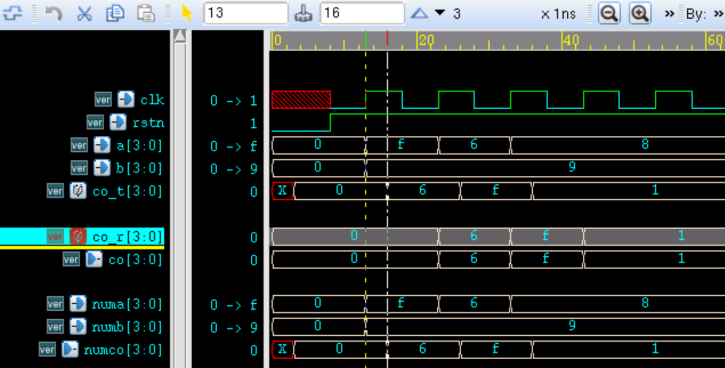
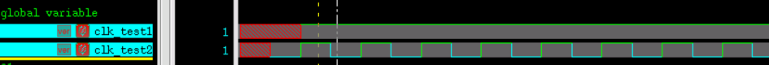
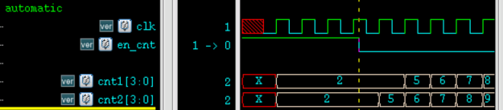
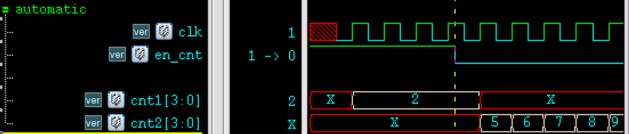

关键词：任务
任务与函数的区别
和函数一样，任务（task）可以用来描述共同的代码段，并在模块内任意位置被调用，让代码更加的直观易读。函数一般用于组合逻辑的各种转换和计算，而任务更像一个过程，不仅能完成函数的功能，还可以包含时序控制逻辑。下面对任务与函数的区别进行概括：
| 比较点 | 函数 | 任务 |
|---|---|---|
| 输入 | 函数至少有一个输入，端口声明不能包含 inout 型 | 任务可以没有或者有多个输入，且端口声明可以为 inout 型 |
| 输出 | 函数没有输出 | 任务可以没有或者有多个输出 |
| 返回值 | 函数至少有一个返回值 | 任务没有返回值 |
| 仿真时刻 | 函数总在零时刻就开始执行 | 任务可以在非零时刻执行 |
| 时序逻辑 | 函数不能包含任何时序控制逻辑 | 任务不能出现 always 语句，但可以包含其他时序控制，如延时语句 |
| 调用 | 函数只能调用函数，不能调用任务 | 任务可以调用函数和任务 |
| 书写规范 | 函数不能单独作为一条语句出现，只能放在赋值语言的右端 | 任务可以作为一条单独的语句出现语句块中 |
任务
任务声明
任务在模块中任意位置定义，并在模块内任意位置引用，作用范围也局限于此模块。
模块内子程序出现下面任意一个条件时，则必须使用任务而不能使用函数。
- 1）子程序中包含时序控制逻辑，例如延迟，事件控制等
- 2）没有输入变量
- 3）没有输出或输出端的数量大于 1
Verilog 任务声明格式如下：
task task_id ; port_declaration ; procedural_statement ; endtask
任务中使用关键字 input、output 和 inout 对端口进行声明。input 、inout 型端口将变量从任务外部传递到内部，output、inout 型端口将任务执行完毕时的结果传回到外部。
进行任务的逻辑设计时，可以把 input 声明的端口变量看做 wire 型，把 output 声明的端口变量看做 reg 型。但是不需要用 reg 对 output 端口再次说明。
对 output 信号赋值时也不要用关键字 assign。为避免时序错乱，建议 output 信号采用阻塞赋值。
例如，一个带延时的异或功能 task 描述如下：
实例
input [N-1:0] numa;
input [N-1:0] numb;
output [N-1:0] numco ;
//output reg [N-1:0] numco ; //无需再注明 reg 类型，虽然注明也可能没错
#3 numco = numa ^ numb ;
//assign #3 numco = numa ^ numb ; //不用assign，因为输出默认是reg
endtask
任务在声明时，也可以在任务名后面加一个括号，将端口声明包起来。
上述设计可以更改为：
实例
input [N-1:0] numa,
input [N-1:0] numb,
output [N-1:0] numco ） ;
#3 numco = numa ^ numb ;
endtask
任务调用
任务可单独作为一条语句出现在 initial 或 always 块中，调用格式如下：
task_id(input1, input2, …,outpu1, output2, …);
任务调用时，端口必须按顺序对应。
输入端连接的模块内信号可以是 wire 型，也可以是 reg 型。输出端连接的模块内信号要求一定是 reg 型，这点需要注意。
对上述异或功能的 task 进行一个调用，完成对异或结果的缓存。
实例
#(parameter N = 4)
(
input clk ,
input rstn ,
input [N-1:0] a ,
input [N-1:0] b ,
output [N-1:0] co );
reg [N-1:0] co_t ;
always @(*) begin //任务调用
xor_oper_iner(a, b, co_t);
end
reg [N-1:0] co_r ;
always @(posedge clk or negedge rstn) begin
if (!rstn) begin
co_r <= 'b0 ;
end
else begin
co_r <= co_t ; //数据缓存
end
end
assign co = co_r ;
/*------------ task -------*/
task xor_oper_iner;
input [N-1:0] numa;
input [N-1:0] numb;
output [N-1:0] numco ;
#3 numco = numa ^ numb ; //阻塞赋值，易于控制时序
endtask
endmodule
对上述异或功能设计进行简单的仿真，testbench 描述如下。
激励部分我们使用简单的 task 进行描述，激励看起来就更加的清晰简洁。
其实，task 最多的应用场景还是应用于 testbench 中进行仿真。task 在一些编译器中也不支持综合。
实例
module test ;
reg clk, rstn ;
initial begin
rstn = 0 ;
#8 rstn = 1 ;
forever begin
clk = 0 ; # 5;
clk = 1 ; # 5;
end
end
reg [3:0] a, b;
wire [3:0] co ;
initial begin
a = 0 ;
b = 0 ;
sig_input(4'b1111, 4'b1001, a, b);
sig_input(4'b0110, 4'b1001, a, b);
sig_input(4'b1000, 4'b1001, a, b);
end
task sig_input ;
input [3:0] a ;
input [3:0] b ;
output [3:0] ao ;
output [3:0] bo ;
@(posedge clk) ;
ao = a ;
bo = b ;
endtask ; // sig_input
xor_oper u_xor_oper
(
.clk (clk ),
.rstn (rstn ),
.a (a ),
.b (b ),
.co (co ));
initial begin
forever begin
#100;
if ($time >= 1000) $finish ;
end
end
endmodule // test
仿真结果如下。
由图可知，异或输出逻辑结果正确，相对于输入有 3ns 的延迟。
且连接信号 a，b，co_t 与任务内部定义的信号 numa，numb，numco 状态也保持一致。

任务操作全局变量
因为任务可以看做是过程性赋值，所以任务的 output 端信号返回时间是在任务中所有语句执行完毕之后。
任务内部变量也只有在任务中可见，如果想具体观察任务中对变量的操作过程，需要将观察的变量声明在模块之内、任务之外，可谓之"全局变量"。
例如有以下 2 种尝试利用 task 产生时钟的描述方式。
实例
task clk_rvs_iner ;
output clk_no_rvs ;
# 5 ; clk_no_rvs = 0 ;
# 5 ; clk_no_rvs = 1 ;
endtask
reg clk_test1 ;
always clk_rvs_iner(clk_test1);
//way2: use task to operate global varialbes to generating clk
reg clk_test2 ;
task clk_rvs_global ;
# 5 ; clk_test2 = 0 ;
# 5 ; clk_test2 = 1 ;
endtask // clk_rvs_iner
always clk_rvs_global;
仿真结果如下。
第一种描述方式，虽然任务内部变量会有赋值 0 和赋值 1 的过程操作，但中间变化过程并不可见，最后输出的结果只能是任务内所有语句执行完毕后输出端信号的最终值。所以信号 clk_test1 值恒为 1，此种方式产生不了时钟。
第二种描述方式，虽然没有端口信号，但是直接对"全局变量"进行过程操作，因为该全局变量对模块是可见的，所以任务内信号翻转的过程会在信号 clk_test2 中体现出来。

automatic 任务
和函数一样，Verilog 中任务调用时的局部变量都是静态的。可以用关键字 automatic 来对任务进行声明，那么任务调用时各存储空间就可以动态分配，每个调用的任务都各自独立的对自己独有的地址空间进行操作，而不影响多个相同任务调用时的并发执行。
如果一任务代码段被 2 处及以上调用，一定要用关键字 automatic 声明。
当没有使用 automatic 声明任务时，任务被 2 次调用，可能出现信号间干扰，例如下面代码描述：
实例
input [3:0] cnti ;
input en ;
output [3:0] cnto ;
if (en) cnto = cnti ;
endtask
reg en_cnt ;
reg [3:0] cnt_temp ;
initial begin
en_cnt = 1 ;
cnt_temp = 0 ;
#25 ; en_cnt = 0 ;
end
always #10 cnt_temp = cnt_temp + 1 ;
reg [3:0] cnt1, cnt2 ;
always @(posedge clk) test_flag(2, en_cnt, cnt1); //task(1)
always @(posedge clk) test_flag(cnt_temp, !en_cnt, cnt2);//task(2)
仿真结果如下。
en_cnt 为高时，任务 (1) 中信号 en 有效， cnt1 能输出正确的逻辑值；
此时任务 (2) 中信号 en 是不使能的，所以 cnt2 的值被任务 (1) 驱动的共用变量 cnt_temp 覆盖。
en_cnt 为低时，任务 (2) 中信号 en 有效，所以任务 (2) 中的信号 cnt2 能输出正确的逻辑值；而此时信号 cnt1 的值在时钟的驱动下，一次次被任务 (2) 驱动的共用变量 cnt_temp 覆盖。
可见，任务在两次并发调用中，共用存储空间，导致信号相互间产生了影响。

其他描述不变，只在上述 task 声明时加入关键字 automatic，如下所以。
task automatic test_flag ;
此时仿真结果如下。
- en_cnt 为高时，任务 (1) 中信号 cnt1 能输出正确的逻辑值，任务 (2) 中信号 cnt2 的值为 X；
- en_cnt 为低时，任务 (2) 中信号 cnt2 能输出正确的逻辑值，任务 (1) 中信号 cnt1 的值为 X；
可见，任务在两次并发调用中，因为存储空间相互独立，信号间并没有产生影响。


点我分享笔记